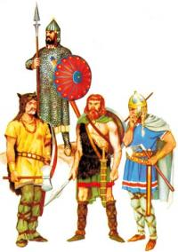

MACLASSE.COM

L'Empire Romain connait son apogée au IIe siècle, il s'étend tout autour de la Méditerranée. Au cours des siècles suivants, les querelles internes et la quête de pouvoir vont affaiblir l'ensemble de l'Empire. En 395, il est séparé en deux : l'Empire Romain d'Occident (à l'ouest) et l'Empire Romain d'Orient (à l'est).
Tous les peuples qui vivent en dehors de l'Empire sont surnommés barbares par les Romains. En raison de l'affaiblissement des frontières, et chassés à l'Est par les huns d'Attila, ces tribus barbares pénètrent peu à peu dans l'Empire Romain pour y piller les richesses et même s'y installer durablement.
Témoignage d'un historien grec : Le bruit s'est répandu de la soudaine apparition d'hommes inconnus, étranges, qui tantôt s'abattent comme l'ouragan du sommet des montagnes, tantôt semblent sortir de terre, et toujours anéantissent tout sur leur passage : les Huns. Les Barbares cherchent à s'installer hors de leur portée. Nos barrières s'ouvrent, le sol barbare vomit, comme un volcan, ses enfants sur notre territoire.
La race des Huns dépasse toutes les bornes de la sauvagerie. Comme on taillade profondément au fer les joues des enfants aussitôt après leur naissance pour que la croissance de la barbe soit arrêtée le moment venu par les cicatrices, ils grandissent sans barbe, sans rien de gracieux. Ils sont prodigieusement laids, et, à les voir, on dirait des bêtes à deux pattes... Ils ne se nourrissent pas d'aliments cuits... mais de racines, de plantes sauvages et de chair demi-crue d'animaux de toutes sortes qu'ils échauffent, lorsqu'ils sont à cheval, entre leurs cuisses.
D'après Ammien Marcellin (330-400), vers 376.
Nous survivons en petit nombre. Des peuples innombrables et très féroces ont occupé l'ensemble des Gaules. Tout le pays qui s'étend entre les Alpes et les Pyrénées, tout ce qui délimite l'Océan et le Rhin est dévasté. Mayence, cité jadis illustre, a été prise et saccagée ; dans son église, des milliers d'hommes ont été massacrés...
Les villes si puissantes de Reims, Arras, Amiens, Strasbourg ont vu leurs populations transférées en Germanie. L'Aquitaine, la Lyonnaise et la Narbonnaise, sauf un petit nombre de villages, sont ravagées. Les villes encore épargnées sont éprouvées au-dehors par l'épée, au-dedans par la famine... »
D'après saint Jérôme, vers 406.
Les Huns et les barbares en général ont une image de guerriers cruels. Mais se sont aussi des peuples d'artisans, de commerçants, qui vivent en tribu, qui respectent leurs lois et possèdent leurs propres croyances et coutumes.
Texte religieux : Un petit nombre de Bretons qui avaient réchappé d'un massacre, abandonna le pays natal pour gagner une terre étrangère. Parmi ceux-ci, il y avait un homme illustre nommé Fracan. Monté sur un navire, il se dirigea vers l'Armorique réputée pour posséder un espace de terre ombragé, calme et à l'abri du fléau. Il traversa la mer avec quelques compagnons et aborda un port appelé Bréhec. Il en parcourut les alentours et, ayant découvert un domaine assez vaste, s'y installa et commença à y vivre avec les siens dans la prospérité.
D'après La Plus Ancienne Vie de saint Guénolé, Ve siècle.
En 476, les Wisigoths prennent Rome. Cet événement marque la chute de l'Empire Romain d'occident et le début du Moyen-Age (A l'Est, l'Empire Romain d'Orient va durer encore environ un millénaire).
Voici la carte de l'Europe en 480 à l'issue des différentes invasions barbares.
As-tu compris et retenu cette leçon? Es tu capable de répondre à quelques questions?
- Quel événement marque la fin de l'Antiquité et le début du Moyen-Age?
- Qu'est-ce qu'un peuple barbare?
- Combien de peuples barbares peux-tu citer?
- Sur quel peuple règne Attila?
- Est-ce que tout l'Empire Romain disparaît avec les invasions barbares?
- Trouve les deux raisons qui poussent les barbares à aller vers l'Ouest.
- Quel peuple prend Rome, en quelle année?
Les barbares est le nom donné par les Romains pour tous ceux qui vivent en dehors de leur Empire. Attirés par les richesses et chassés à l'est par les Huns, les barbares pénètrent dans l'Empire romain pour le piller ou même s'y installer. La prise de Rome en 476 par les Wisigoths marque la fin de l'Antiquité et le début du Moyen-âge.


Mentions légales / Qui sommes-nous ? / Plan du site
Nos matières : français - mathématiques - histoire - sciences - arts visuels